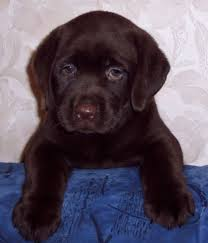
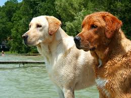

Зустрічаючи лабрадора ретривера на прогулянці, в парку або лісі, пройти повз нього байдуже неможливо. Зізнайтеся, часом так важко встояти перед бажанням приєднатися до його азартних ігор з м’ячем або тарілкою ! Активний, товариський, ласкавий пес, з чудовим характером — одним словом, собака, про які мріють. Але головне, чим полонить лабрадор ретривер — його очі, що світяться від любові і безмежної відданості своєму господареві.
Сьогодні лабрадор ретривер — одна з найпопулярніших порід собак у світі, і з кожним роком число її прихильників росте. Лабрадор визнаний ідеальної сімейної собакою, оскільки поєднує в собі безліч переваг: чудовий екстер’єр, комунікабельність, стабільну психіку і безкінечну вірність тим, кого він вважає своїми друзями та членами родини.
Вважається, що перші собаки породи лабрадор ретривер з’явилися на острові Ньюфаундленд (територія сучасної Канади). У питаннях походження назви породи думки вчених розділилися. Одні вважають, що спочатку окрас лабрадора був виключно чорним, і свою назву ці собаки отримали на честь каменю «лабрадорит». Інші схиляються до версії, що вони були виведені на півострові Лабрадор.
Лабрадор ретривер — по- справжньому універсальна порода. Спочатку він був виведений як робоча собака, а сьогодні нерідко використовується як мисливця, поводиря і рятувальника. Лабрадор — природжений плавець і, завдяки водонепроникним властивостям вовни, здатний працювати навіть у крижаній воді.
Лабрадора ретривера нерідко використовують і як поліцейської собаки. Розумний, кмітливий, уравновешанний пес, на відміну від багатьох інших поліцейських порід, мотивувати на роботу не злістю і тривалими тренуваннями, а виключно своєю відданістю людям.
Відомо, що лабрадори здатні допомагати епілептикам, так як можуть передчувати момент настання припадку. Вони попереджають людину про небезпеку і дають знак, щоб він знайшов для себе безпечне місце.
Види, стандарти і різновиди
Современнний лабрадор ретривер — це міцна, мускулиста собака щільної статури. У середньому її зріст становить 54-57 сантиметрів. У лабрадорів широкий череп, широка і глибока груди, міцна поперек. Для цих собак характерні: виражений перехід від лоба до морди, середнього розміру очі і висячі, прилеглі до голови вуха. Існує три різновиди забарвлення лабрадорів : суцільний чорний, палевий або коричневий.
вибір цуценят
Вибір породистого щеняти — це завжди складний, відповідальний момент. Ми радимо вам побувати на кількох спеціалізованих виставках і ближче познайомитися з заводчиками і породою. На цьому етапі необхідно визначитися з підлогою і забарвленням майбутнього вихованця. Тут складно щось радити, ці питання кожен вирішує для себе сам. Також необхідно визначити, для яких цілей ви купуєте собаку, і чого чекаєте від її появи в будинку — мрієте чи про призові місцях і медалях або вам достатньо просто взаємної любові.
Природно, собаки шоу- класу коштують дорожче звичайних вихованців (тих, що беруть, як мовиться, «для душі»). У будь-якому випадку важливо розуміти, що ні висока ціна, ні класність батьків, ні рекомендації власника не можуть гарантувати вам перемог на виставках. Між тим, ви у відповіді за свого вихованця, незалежно від того, чи буде він приносити вам нагороди.
Найкращий вік, коли можна відлучати цуценя лабрадора ретривера від матері — 6-8 тижнів. При виборі собаки зверніть увагу на місце утримання цуценят. Хороші умови, простір, комфорт, чистота, відсутність неприємних запахів говорять багато про що — насамперед, про те, що заводчики ставляться до своїх «дітям» з душею і відповідальністю.
Тут все, як у людей. Хочете знати, якою буде ваша собачка в зрілому віці ? Зустрітися з мамою, дізнайтеся більше про тата. Якщо сука сприйняла вашу появу неадекватно, гарчить, захлинається гавкотом, то краще утриматися від покупки щеняти з цього посліду. Психічні відхилення мають звичай передаватися у спадок. Від лабрадора ми чекаємо, передусім, уравновешанной психіки та спроможності ладити з людьми.
Здорова собака при появі нової людини насторожиться, однак буде слухатися команд господаря і оцінювати ситуацію адекватно. Далі відбувається більш близьке знайомство — мати обнюхує вас і, якщо все в порядку, вам дадуть знак, виляючи хвостом.
Отже, перед вами кілька чарівних створінь, з яких потрібно вибрати того єдиного, хто складе ваше щастя. З одного боку, професіонали знають мільйон правил, як вибрати хорошого щеняти. З іншого боку, ідеального рецепту не існує. Крім поведінки, вам потрібно оцінити і стан здоров’я цуценяти (мокрий і холодний ніс, м’який, пружний живіт, нормальний стілець і т.д.), а також його відповідність стандартам. Якщо ви не фахівець, то на допомогу у виборі собаки вам може надати сам заводчик або, що ще краще, запрошений експерт.
Особливості утримання, догляд, здоров’я
Як ви вже зрозуміли, лабрадор ретривер — виняткова собака, наділена масою талантів, здатна стати людині вірним другом і працьовитим помічником. Але ті, хто вирішив обзавестися лабрадором ретривером, повинні розуміти, що такий живий темпераментної собаці потрібні тривалі прогулянки, регулярні тренування і виїзди на природу. Якщо ви не зумієте забезпечити цю собаку належної активності, особливо в юному віці, вона може знайти собі заняття сама, і, швидше за все, вони вам не сподобаються.
Що стосується догляду за шерстю лабрадора ретривера, то він досить простий: собаку необхідно регулярно розчісувати спеціальною гумовою щіткою. Якщо лабрадора своєчасно привчити до цієї нехитрої процедури, вона йому навіть сподобається. Розчісування покращує кровообіг, видаляє відмерлі волосся і стимулює ріст нової вовни. Також необхідно регулярно оглядати вуха, очі, зуби і кігті. і, в разі необхідності, робити відповідні дії (самостійне чищення, візит до стоматолога чи до ветеринарного лікаря).
Мити лабрадорів потрібно тільки в міру реальної необхідності. Звичайно цих собак просто купають у чистій воді. Час від часу можна використовувати м’який «собачий» шампунь.
Важливо враховувати, що при неправильному годуванні лабрадор ретривер здатний дуже швидко набирати зайву вагу, особливо це спостерігається в пізні роки у представників цієї породи. Тому необхідно взяти раціон собаки під самий ретельний контроль. Важливо дотримуватися певної кількості прийомів їжі, а також стежити за тим, щоб у собаки не було корму у вільному доступі.
Особливості в’язки лабрадора ретривера
Вибір партнера для в’язки залежить від багатьох факторів. Існує три різновиди забарвлення лабрадорів, і при схрещуванні це обов’язково потрібно враховувати. Необхідно добре розбиратися в генетиці забарвлень цих собак, щоб передбачити результат тих чи інших «міжрасових» схрещувань. Серйозні заводчики проходять спеціальні тести, що дозволяють визначити, гени якого забарвлення несе їх лабрадор. Оптимально звернутися за порадою і допомогою в підборі пари в спеціалізований клуб або розплідник.
Виховання і дресирування
Визначальним моментом для формування характеру лабрадора є емоційний контакт з господарем і членами сім’ї. Чим більше часу ви будете приділяти своєму собаці (іграм, пестощів, простий метушні), тим більше вона буде довіряти вам, а довіра — необхідний запорука успіху в такому важкій справі як виховання.
До появи цуценя в будинку необхідно ретельно підготуватися — прибрати з поля доступності всі небезпечні предмети, запастися їжею, засобами догляду та іграшками. Цуценяті необхідно відвести власне місце, де він може спокійно відпочивати від ігор. Важливо навчити дітей не чіпати цуценя, поки він знаходитися на своєму місці.
З моменту появи собаки в будинку, її необхідно навчати команді «До мене !». До власної кличці лабрадор звикає дуже швидко, і вже через кілька днів він почне розуміти, що ви звертаєтеся саме до нього. Категорично забороняється карати цуценя, який підійшов по команді, навіть якщо на це у вас є вагомі причини.
Далі приступають до дресирування. Всі лабрадори різні і демонструють різні здібності до дресирування. Деякі собаки опановують усіма командами за два тижні, а в інших цей процес може займати до двох місяців. Тут важливо не перевантажувати собаку і своєчасно давати їй відпочити від одноманітних вправ.
Розплідники і клуби
Перші представники породи з’явилися в нашій країні ще в 60 -х роках, проте тоді цих собак було дуже мало. Про початок розвитку цієї чудової породи в Росії можна говорити, починаючи з 90 -х років. У 1996 році в Москві був зареєстрований Національний Ретривер Клуб. Його головним завданням було об’єднання російські клубів і розплідників, що займаються розведенням лабрадорів і голден ретриверів.